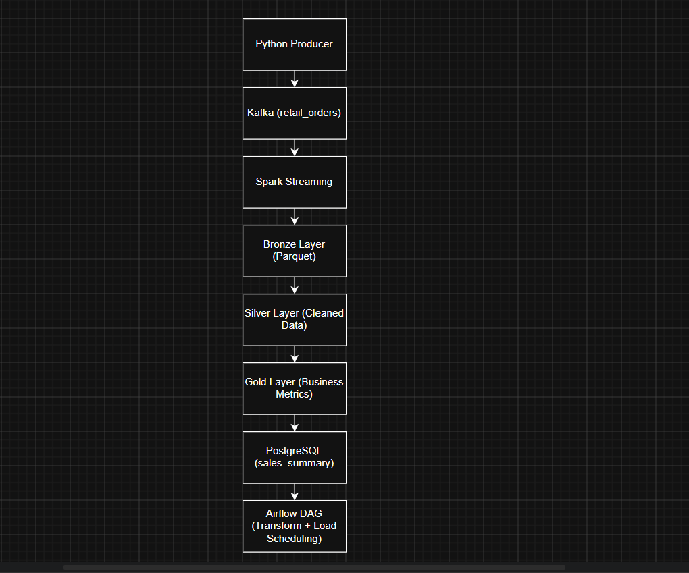

Toronto, ON
Results-driven Power BI and Business Intelligence Developer with 6+ years of experience designing enterprise BI solutions across healthcare, pharmacy, banking, financial services, and enterprise reporting domains.
Skilled in Power BI, SQL Server, SSIS, SSAS, SSRS, Azure Data Factory, Microsoft Fabric, DAX, Power Query, Python automation, semantic models, paginated reports, ETL pipelines, and reporting workflow automation.
Interactive dashboards, KPI cards, drill-down reports, DAX measures, semantic models, Power Query transformations, RLS/OLS, and paginated reports.
Enterprise BI reporting using SQL Server, T-SQL, SSIS, SSAS, SSRS, stored procedures, ETL workflows, and performance tuning.
Azure-based data workflows, Python report automation, YAML configurations, SQL Server Agent jobs, ADF pipelines, Synapse, Fabric, Snowflake, and PySpark.
Developed pharmacy operational reports using Power BI semantic models and complex DAX measures based on business requirements.
Built Python automation scripts, YAML-driven configurations, and SQL Server Agent jobs to automate report generation, formatting, and delivery.
June 2025 — PresentDesigned Power BI dashboards and paginated reports with advanced DAX, KPIs, drilldowns, conditional formatting, and financial reporting insights.
Developed T-SQL stored procedures, SSIS packages, SSAS models, ADF pipelines, CI/CD workflows, and Power BI security models.
March 2022 — May 2025Built enterprise BI dashboards, optimized SQL queries, and migrated SSRS financial reports into Power BI for finance and operations users.
Created ETL workflows using SSIS and Azure Data Factory and supported semantic models, RLS/OLS, and financial reporting validation.
May 2020 — Feb 2022
Microsoft BI Portfolio Project
Designed a complete data warehouse and BI solution using SQL Server, SSIS, SSAS, and Power BI.
Implemented ETL pipelines for data cleansing, type conversion, and error handling. Built SSAS cube measures including Sales, Total Cost, Profit, and Profit Margin.
Created interactive Power BI dashboards for executive KPIs, product performance, and customer insights.
I am open to Power BI Developer, BI Developer, SQL Developer, Data Engineer, and Analytics Engineer opportunities.
Email: saisrichandu22@gmail.com
Phone: 647-247-4841
Location: Toronto, ON
GitHub: github.com/saisrichandu22
LinkedIn: Add your real LinkedIn URL here